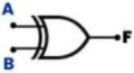
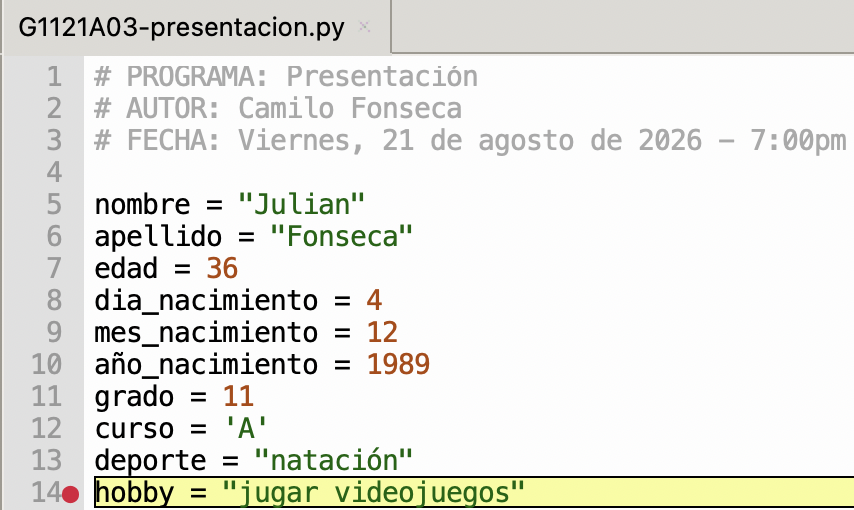
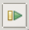

Guía 1121: IDE¶
|
|

Exploración Estructuración Actividad práctica Transferencia
Temática: Introducción al Entorno de Desarrollo Integrado (IDE) Thonny: funciones, depuración y buenas prácticas de programación.
Objetivo de aprendizaje: Comprender y utilizar las herramientas del IDE Thonny para escribir, ejecutar y depurar código en Python, aplicando el uso de comentarios y variables para mejorar la calidad y claridad de los programas.
DESEMPEÑO: Demuestra habilidad para utilizar el entorno de desarrollo Thonny, aplicando correctamente conceptos básicos de programación en Python, como el uso de variables, comentarios y depuración de código, logrando desarrollar programas funcionales y claros.
Componente: Solución de problemas con T&I.
Competencia: Propongo innovaciones tecnológicas e informáticas para la solución de problemas dando cumplimiento a restricciones, condiciones y especificaciones técnicas y contextuales.
Evidencia de aprendizaje: Propongo, analizo y comparo diferentes soluciones a un mismo problema de la tecnología o la informática, explicando su origen, ventajas y dificultades.
Actividades desarrolladas en su totalidad.
Participación en clase.
Explicación clara de conceptos.
Argumentación de ideas.
Cumplimiento de las reglas del aula.
Plan de refuerzo 01.pdf Descargar
Mensaje del autor¶
“La presente guía tiene como propósito facilitar la comprensión y el uso adecuado del entorno de desarrollo Thonny para la programación en Python. Se espera que, mediante la aplicación de los conceptos y herramientas presentados, los estudiantes desarrollen habilidades sólidas para escribir, depurar y organizar código de manera eficiente y clara, contribuyendo así a su formación integral en el ámbito de la programación”.
—Camilo Fonseca
¿Qué es un IDE?¶
Un IDE (entorno de desarrollo integrado) es un software que ayuda a los programadores a desarrollar código de software de manera eficiente.
Un IDE aumenta la productividad de los desarrolladores al combinar capacidades como editar, crear, probar y empaquetar software en una aplicación fácil de usar.
“Así como los escritores utilizan editores de texto y los contadores utilizan hojas de cálculo, los desarrolladores de software utilizan IDES”.
Características de un IDE¶
Característica |
Descripción |
|---|---|
Automatización de la edición de código |
Los lenguajes de programación tienen reglas sobre cómo estructurar instrucciones. Dado que un IDE conoce estas reglas, contiene muchas funciones inteligentes para escribir o editar automáticamente el código fuente. |
Resaltado de sintaxis |
Un IDE puede dar formato al texto escrito haciendo que algunas palabras aparezcan en negritas o itálicas, o utilizando diferentes colores de fuente. Estas pistas visuales hacen que el código fuente sea más legible y previenen errores sintácticos accidentales. |
Finalización de código inteligente |
Un IDE puede proponer sugerencias para completar una instrucción de código cuando el desarrollador comienza a escribir. |
Refactorización del soporte |
La refactorización de código es el proceso de reestructuración del código fuente para hacerlo más eficiente y legible sin tener que cambiar su funcionalidad central. |
Automatización de la creación local |
Los IDE realizan tareas de desarrollo recurrentes que por lo general son parte de todos los cambios de código. Esto aumenta la productividad. |
Compilación |
Un IDE compila o convierte el código en un lenguaje simplificado que el sistema operativo puede entender. El IDE convierte un código legible para humanos en código legible para máquinas. |
Pruebas |
Un IDE permite automatizar pruebas antes de integrar el software en un ambiente de producción. |
Depuración |
La depuración es el proceso de corregir todos los errores o fallas revelados en las pruebas. Un IDE permite seguir el código, línea por línea, conforme se pone en marcha e inspeccionar el comportamiento del código. |
THONNY¶
Thonny es un IDE para programar en Python. Funciona en sistemas operativos Windows, Linux y MacOS.
Thonny viene con Python 3.XX integrado, por lo que solo se necesita un instalador simple y estará listo para aprender programación. (También usted puede usar una instalación de Python separada, si es necesario). La interfaz de usuario inicial está despojada de todas las funciones que pueden distraer a los principiantes.

IDE Thonny¶ |
“Un IDE como Thonny, permite ejecutar un conjunto de instrucciones línea por línea de forma automatizada sin necesidad de estar PULSANDO ENTER en cada instrucción”.
Características de THONNY¶
|
|

|
|

|
|
|

|
|

|
|

A00: Introducción (5%)¶
Exploración
TRANSCRIBA en su cuaderno el objetivo, las orientaciones curriculares y los criterios de evaluación de la presente guía.
Lea el mensaje del autor y en su cuaderno responda la siguiente pregunta:
¿Por qué es necesario usar otro programa para codificar en PYTHON y no simplemente seguir usando la consola interactiva?
A01: Taller (10%)¶
Estructuración
En su cuaderno responda las siguientes preguntas:
¿Qué es un IDE?
¿Qué tienen en común y en que se diferencian los desarrolladores de software con los escritores y los contadores?
¿De qué forma se pueden ver los valores de las variables en Thonny?
¿Qué es para usted depurar?
¿Cuales son los errores de sintaxis más comunes al momento de programar?
¿Por qué se considera que las pruebas y la depuración es lo más importante que debe incluir un IDE?
Con la tabla: Características de un IDE, realizar un mapa conceptual.
Para las siguientes frases, en su cuaderno marque falso o verdadero y explique el por qué:
Thonny es un IDE para programar en JavaScript. (F o V)
Thonny solo funciona en sistema operativo Windows. (F o V)
Thonny solo es para usuarios avanzados. (F o V)
Thonny viene con Python integrado. Así que no es necesario instalar Python por aparte. (F o V)
Al igual que en la consola interactiva de PYTHON, en Thonny es necesario PULSAR la tecla ENTER cada vez que queramos ejecutar una instrucción. (F o V)
Consulte en INTERNET los siguientes temas y haga un resumen corto en su cuaderno:
¿Qué otros IDES existen para programar en Python? (Mínimo 2 IDES por cada sistema operativo LINUX, Windows y MacOS)
¿Qué es una API (Application Programming Interface)?
A02: Interfaz IDE Thonny (10%)¶
Actividad práctica
EJECUTE el IDE Thonny.
En el área superior de la interfaz, PULSE cada una de las opciones del menú superior (File, Edit, View, Run, Tools, Help). Por cada menú desplegado, en su cuaderno escriba su posible utilidad.
En la interfaz, UBIQUE la barra de herramientas estándar:

IDE Thonny¶
SITUE el mouse en cada uno de los iconos de la barra de herramientas estándar para generar su descripción, luego dicha descripción escríbala en su cuaderno.
En el menú superior, PULSE el menú View y active cada uno de los elementos presentes en dicho menú como son (Files, Exception, Files, etc.) Por cada menú activado, en su cuaderno describa los cambios en la interfaz.

Menú de herramientas¶
Cuando termine de activar todas las herramientas, solo dejar activas las siguientes:
Assistant
Files
Shell
Variables
En la ventana Files, acceda carpeta por carpeta hasta que llegue a la localización de la carpeta de evidencias. Debería tener la siguiente interfaz:

Interfaz IDE THONNY¶
Cierre el IDE Thonny.
{kind=link}
A03: Primer código (10%)¶
Actividad práctica
Abra el IDE Thonny.
En la ventana Files y acceda a la carpeta de evidencias del periodo actual.
Sobre el fondo blanco de la ventana Files, PULSE el rmb (right mouse button) para abrir el menú contextual. SELECCIONE New file…

En la ventana File name, ESCRIBIR el nombre: G1121A03-presentacion.py y dar clic en OK
En el archivo G1121A03-presentacion.py escriba 3 comentarios para realizar identificación de su código fuente. Los comentarios inician con el carácter #.
1# PROGRAMA: Presentación 2# AUTOR: Julian Fonseca 3# FECHA: 21 de agosto de 2026
¿Por qué agregar comentarios al código?
Un comentario es una sección del código que NO SE EJECUTA.
Los comentarios no solo sirven para identificar el código fuente. También sirven para lo siguiente:
Claridad: Aclarar secciones complejas, algoritmos o decisiones de diseño.
Mantenimiento: Facilitar la modificación y depuración del código en el futuro. Un código bien comentado es más fácil de actualizar.
Colaboración: Permitir a otros programadores entender su lógica y contribuir eficientemente.
Documentación: Servir como documentación interna del código, complementando la documentación externa.
En Python para establecer un comentario, antes de la línea de código se escribe el carácter #.
En su cuaderno…
Responda las siguientes preguntas:
¿Qué problemas podrían suceder si no se agregan comentarios al código?
¿Qué sucede con la ejecución de un código si todas sus líneas son comentarios?
En Python, ¿Cómo se establece un comentario?
Al código adicione unas variables que almacenen la información de presentación de una persona:
nombre (usar variable tipo cadena)
apellido (usar variable tipo cadena)
edad (usar variable tipo entero)
día de nacimiento (usar variable tipo entero)
mes de nacimiento (usar variable tipo entero)
año de nacimiento (usar variable tipo entero)
grado (usar variable tipo entero)
curso (usar variable tipo carácter)
deporte (usar variable tipo cadena)
hobby favorito (usar variable tipo cadena)
1# EJEMPLO 2nombre = "Julian" 3apellido = "Fonseca" 4edad = 24
Ahora es necesario crear otras variables, que almacenen los mensajes que van a mostrar la información de la persona. Estas variables son también de tipo cadena.
1# EJEMPLO 2mensaje01 = f"mi nombre es {nombre} {apellido}" 3mensaje02 = f"tengo {edad} años"
¿Por qué se agrega la letra f antes de la cadena?
Se agrega la letra f antes de un texto en Python para crear una cadena formateada (f-string), lo que permite insertar variables y operaciones matemáticas directamente dentro de las comillas usando llaves {}s.
En el código añada la función
print()para mostrar en consola el valor de las variables mensaje.1# EJEMPLO 2print(mensaje01)
En la barra de herramientas estándar, PULSE el botón Run current script F5 para ejecutar su código (línea por línea) automáticamente.
Si todo esta bien, en la ventana Shell (consola interactiva de python) debería aparecer la siguiente salida (con sus datos!!!):

En su cuaderno…
Una vez ejecutado el código, describa que sucede en las ventanas: Shell, Variables y Assistant.
Guarde los cambios y cierre el IDE Thonny.
{kind=link}
A04: Depurando código (15%)¶
Actividad práctica
Ejecute el IDE Thonny y acceda al archivo G1121A03-presentacion.py
En la barra de herramientas estándar, PULSE el botón Debug current script.
THONNY entrará en modo depuración.
¿Qué es el modo depuración?
El modo depuración permite a los programadores identificar y corregir errores (bugs) en su código de manera eficiente. Al usar un depurador, se tienen las siguientes ventajas:
Ejecutar el código paso a paso: Observando el estado de las variables y el flujo de ejecución.
Establecer puntos de interrupción (breakpoints): Detener la ejecución en líneas específicas para inspeccionar el código.
Inspeccionar variables: Ver los valores de las variables en tiempo real.
Evaluar expresiones: Calcular el valor de expresiones complejas.
Esto agiliza el proceso de encontrar y solucionar errores, lo que a su vez reduce el tiempo de desarrollo y mejora la calidad del software. En resumen, la depuración en un IDE es como tener una lupa y un microscopio para examinar tu código y asegurar que funcione correctamente.
En su cuaderno…
Responda las siguientes preguntas:
¿Por qué es útil usar un depurador?
¿Qué ventajas se tienen al usar un depurador?
¿Qué pasaría con un programa si no existieran los depuradores?
OBSERVE en el archivo G1121A03-presentacion.py como se ilumina la primera línea de código. Esto quiere decir que dicha línea será ejecutada.
En la barra de herramientas estándar, OBSERVE que se habilitaron los botones: Step over F6, Step into F7, Step out, Resume F8.
En la barra de herramientas estándar, PULSE el botón Step over F6 (varias veces hasta acabar el programa) para ver como el código se ejecuta línea por línea. OBSERVE como en la ventana de Variables se van creado las variables a medida que ejecuta todo el programa.
En la barra de herramientas estándar, PULSE el botón Step into F7 (varias veces hasta acabar el programa) para ver como el código se ejecuta línea por línea.
En su cuaderno…
Responda las siguientes preguntas:
¿Cuál es la diferencia entre DEPURAR un programa usando Step over F6 y DEPURAR un programa usando Step into F7?
¿Cuál de las dos DEPURACIONES es más rápida y por qué?
¿Cuál de los dos DEPURACIONES es más detallada y por qué?
En su código fuente, en la parte izquierda encuentra unos números que enumeran líneas de código. Elija cualquier número de línea de código y haga clic sobre dicho número para generar un punto rojo break point.
Vuelva a hacer clic sobre el número de la línea de código para eliminar el break point.
En su código fuente, identifique las siguientes líneas de código y por cada una agregue un break point:
🔴 Línea de código donde finaliza la creación de las variables de los datos de la persona.
🔴 Línea de código donde finaliza la creación de las variables de los mensajes.
🔴 Línea de código donde finaliza la creación las funciones
print().
PULSE el botón Debug current script y OBSERVE como esta vez, el programa se ejecuta hasta el PRIMER CÍRCULO ROJO break point del código. Esto es útil cuando se desea averiguar que pasa con el programa en una línea de código específica.

Esto nos evita depurar el código línea por línea!!!¶
Ahora en la barra de herramientas estándar, presione el botón resume F8 para ejecutar todo el código por cada break point.

Resume F8¶
En su cuaderno…
Responda las siguientes preguntas:
¿En qué casos es útil depurar un código con break points?
¿Tiene sentido depurar un código llenando de break points todas las líneas de código?
Guarde los cambios y cierre el IDE Thonny.
{kind=link}
{kind=link}
{kind=link}
{kind=link}
A05: Guion (50%)¶
Transferencia
Cree un archivo de nombre: G1121A05guion.py y guárdelo en la carpeta de evidencias del periodo actual.
En el archivo G1121A05guion.py cree un guión de una obra de teatro donde 2 personas hablan sobre un tema cualquiera. Tenga en cuenta lo siguiente:
Cree los comentarios de identificación del código.
Cree variables de datos para dos personas diferentes.
Cree variables de mensajes.
Las variables de mensajes deben estar con cadena formateada (f-string) para mostrar el valor de las variables de datos.
Use las funciones
print()para mostrar el valor de las variables de mensajes.Para el guión se usa identificación del personaje seguido de dos puntos (:) y posteriormente el mensaje a mostrar.
1# EJEMPLO 2personaje02_nombre = "Felix" 3personaje02_apellido = "Duarte" 4mensaje01 = f"PERSONAJE_01: hola buenas tardes, ¿cuál es su nombre?" 5mensaje02 = f"PERSONAJE_02: hola, me llamo {personaje02_nombre} {personaje02_apellido}" 6print(mensaje01) 7print(mensaje02)
La conversación debe durar mínimo 2 minutos. Pensar en un tema extenso como deportes, ofertas laborales, estudios, problemas, experiencias, etc.
NO USAR CONTENIDO GROSERO, EXPLICITO o que incumpla cualquiera de las normas del manual de convivencia.
Una vez el código esté listo, agregar un break point al inicio de las funciones
print(). Luego realizar una depuración de código línea por línea para ver en la consola interactiva como se van mostrando los mensajes.Sustentar el código al docente.